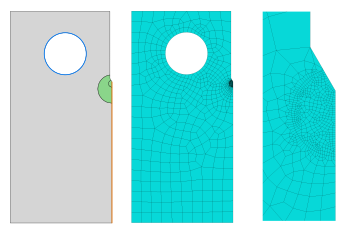

2d mixed mesh import
In this example, we will import a 2d mesh of a Compact Tension (CT) specimen from Abaqus. The mesh has both triangular and quadrilateral cells, and we define a few sets in Abaqus.
Abaqus setup
 Figure 1: Geometry and sets, mesh overview and detailed mesh from Abaqus.
We have created sets for the hole (blue line: "Hole"), the symmetry edge (red line: "Symmetry"), and the crack zone (green area: "CrackZone").
Importing mesh
The mesh above was created in Abaqus cae, and in this example we import the generated input file: compact_tension.inp
using Ferrite, FerriteMeshParser
grid = get_ferrite_grid("compact_tension.inp")Ferrite.Grid{2, Union{Ferrite.Triangle, Ferrite.Quadrilateral}, Float64} with 1046 Ferrite.Quadrilateral/Ferrite.Triangle cells and 1098 nodesWe can now inspect this grid, showing that we have different cell types
println(typeof(grid))
println(unique(typeof.(getcells(grid)))) # The different cell types in the gridFerrite.Grid{2, Union{Ferrite.Triangle, Ferrite.Quadrilateral}, Float64}
DataType[Ferrite.Triangle, Ferrite.Quadrilateral]Furthermore, the node and cell sets are imported
println([(key, length(set)) for (key, set) in Ferrite.getnodesets(grid)])
println([(key, length(set)) for (key, set) in Ferrite.getcellsets(grid)])[("CrackZone", 649), ("Hole", 38), ("Symmetry", 54)]
[("CrackZone", 631), ("Hole", 38), ("CPS3", 47), ("CPS4R", 999), ("Symmetry", 53)]As we see, in addition to the sets created in Abaqus, the cellsets also include a set for each abaqus element type (useful if you for example defined reduced integration in only part of the domain and want to have this in Ferrite). Finally, facesets are automatically created by default (can be turned off by generate_facesets=false argument) based on the nodesets:
println([(key, length(set)) for (key, set) in Ferrite.getfacesets(grid)])[("CrackZone", 2491), ("Hole", 38), ("Symmetry", 53)]Clearly, the faceset "CrackZone" doesn't make much sense, but unless the mesh is very large it doesn't hurt. The facesets can be created manually from each nodeset by using the create_faceset function:
faceset = create_faceset(grid, getnodeset(grid,"Hole"));This can if desired be merged into the grid by
merge!(Ferrite.getfacesets(grid), Dict("HoleManual" => faceset))
println([(key, length(set)) for (key, set) in Ferrite.getfacesets(grid)])[("CrackZone", 2491), ("Hole", 38), ("HoleManual", 38), ("Symmetry", 53)]Plain Program
Below follows a version of the program without any comments. The file is also available here: compact_tension.jl
using Ferrite, FerriteMeshParser
grid = get_ferrite_grid("compact_tension.inp")
println(typeof(grid))
println(unique(typeof.(getcells(grid)))) # The different cell types in the grid
println([(key, length(set)) for (key, set) in Ferrite.getnodesets(grid)])
println([(key, length(set)) for (key, set) in Ferrite.getcellsets(grid)])
println([(key, length(set)) for (key, set) in Ferrite.getfacesets(grid)])
faceset = create_faceset(grid, getnodeset(grid,"Hole"));
merge!(Ferrite.getfacesets(grid), Dict("HoleManual" => faceset))
println([(key, length(set)) for (key, set) in Ferrite.getfacesets(grid)])
# This file was generated using Literate.jl, https://github.com/fredrikekre/Literate.jlThis page was generated using Literate.jl.